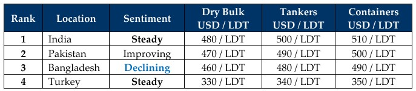

inWeekly Demolition Reports14/10/2024

A comparatively (and mercifully) quieter week (in comparison to those past) ensued, not only across the warring landscapes but evena static sub-continent ship recycling market that refuses to show any signs of stability (far from any marked improvement), as our world spins through its final lap around the sun. In the ‘hot-zone’, other than ongoing skirmishes in the Russia – Ukraine war as well as the regular state of incursions by Israel into Gaza in the West and Lebanon in the North, the world (and global economies) terrifyingly await Israel’s deadly and pending incursion(s) against Iran, which it says will primarily be aimed at crippling key economic sectors of the Iranian nation, resulting in crude oil already on the rise in anticipation of such an attack.
As an eerie calm descended across tense global economies including a destitute ship recycling sector, it truly has been a hot minute since a regular supply of a decent variety of vessels has been available on the regular (likely the worst in a decade), as levels themselves having declined by over USD 100/LDT since the peaks of early 2024 and offerings continually retreat, firmly relegating all vessels below the commensurate USD 500/LDT mark. Geopolitical events have also to blame for much of the trauma across the ship recycling markets this year, such has been the unpredictable nature of global instability at present that sentiments are yoyoing wildly from one week to the next.
Turning up the zoom reveals much of the same as Bangladesh remains virtually out of the picture for over a couple of weeks now, given that most infrastructure projects remain on hold under the current interim government. Whilst off of a recent hiccup in positivity India managed to haul in a massive tranche of tonnage, ship recycling yards across Bangladesh and (especially) Pakistan lie empty on account of comparatively weak(er) sentiments that have left demand stifled in contempt of an ongoing and temporary shuttering of ship recycling yards at these destinations. As cheaper Chinese steel continues to flood the markets and has been a key source of frustration for Indian and Pakistani recyclers across recent times, meaningful tariffs have done little to stabilize local steel plate prices at these destinations, which are either under the floor or crawling on it. The “other” fundamental i.e. U.S. Dollar resumed its untoward advances against competing ship recycling nation currencies as all ship recycling destinations reported depreciations of varying degrees this week.
Overall, the interim, while tense and on edge, leaves the industry with a forecast that is one of certain economic pressures waiting to be delivered across Q4 and even into Q5, marking a feared 8th year resurgence of terrible times across the ship recycling industry (and the world at large), given that we have now witnessed economies tumble on an 8 year cycle i.e. 2007 – 2008 / 2015 – 2016 / 2023 – 2024. Makes you wonder if this is a cyclical trend to the performance of global and ship recycling economies. Notwithstanding, despite there being a noticeable cooling in the dry bulk sector of late, freight rates remain firm across the board and there are not too many candidates expected to head for recycling through the rest of the year. Any bets on tankers, though?
For Week 41 of 2024, GMS Market Rankings / vessel indications are as below.

📄 Download PDF: Ship-recycling-market-insight-Week-41-10-11-2024-Eerie_Calm.pdf
Source: GMS,Inc.https://www.gmsinc.net/gms_new/index.php/web